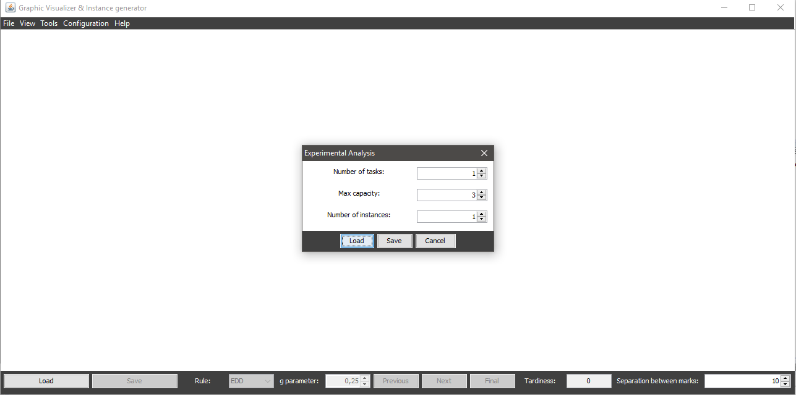

Once you access the experimental analysis dialog, to perform such analysis by parameters there's no specififc condition required and it can be done specifying the following parameters:
Once you have chosen the required parameters, you only have to click the Save button at the bottom of the dialog.
Once the analysis is processed (it may take a few seconds, based on the number of combinations), a dialog will be displayed where you can navigate through your folders to choose the name of the file to save (it's not required to specify the extension, the system will automatically add the xls extension to the file). Generated file can be opened with any software that supports xls.